Candidate List 20261127Last night — ZTF: 2,116 passed basic cuts (66 young) · LSST: 1,046 passed basic cuts (218 young)Previous Day Next Day
Section 1: New Sources (age<1d) Section 2: Old (1-5d) sources observed last night Section 3: Already classified as a supernova on TNSplaceholder
Section 1: New Afterglow/FBOT Cands Last Night (0)
Section 2: Older Sources Observed Last Night (14)
1. [ZTF] ZTF26aciadxj (Afterglow?) (TNS: AT 2026akjk) [Back to Top] [Share] [Trigger Swift] [Fritz Alert] [Fritz Source] [Lasair]RA, Dec: 30.45432, 28.5363 2h 1m49.04s, 28d32m10.69sGalactic (l, b): 141.14666, -31.83397 ext(g-r) = 0.06Observed last night in r, not detected: limit 19.59 (5σ), 1.03 d after the last r detection at 19.18 → fading ≥ 0.40 mag/day.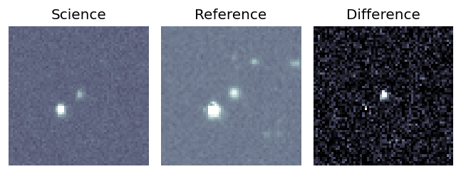
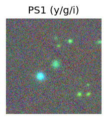
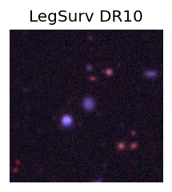
TESS: Sectors [17 58 85]
SDSS (<15 kpc):Found SDSS phot-z: z=0.09; peak abs mag = -19.11
PS1: 0 sources in 3 arcsec
LegacySurvey: 1 sources in 3 arcsec Closest: d = 1.24 arcsec, 312.3 deg (east of north) photoz=0.11 (68% bounds 0.08, 0.14), type=REX peak abs mag (ext. corrected) = -19.52 (68% bounds -18.9, -20.16)
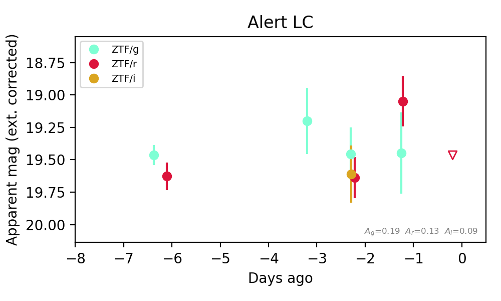
Extinction-corrected gr color:
From alerts: 0.4 +/- 0.37 mag
Extinction-corrected gi color:
From alerts: -0.16 +/- 0.3 mag
Extinction-corrected ri color:
From alerts: 0.03 +/- 0.27 mag
Consistent with synchrotron, g-r>0!
Rise Rate:
g: 0.08 mag/day
r: 0.07 mag/day
Fade Rate:
r: 0.4 mag/day
2. [ZTF] ZTF26aciiosg (FBOT?) (TNS: AT 2026akpx) [Back to Top] [Share] [Trigger Swift] [Fritz Alert] [Fritz Source] [Lasair]RA, Dec: 183.76813, 13.59525 12h15m4.35s, 13d35m42.89sGalactic (l, b): 269.01849, 74.02216 ext(g-r) = 0.033

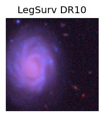
TESS: Sectors 49
PS1: 0 sources in 3 arcsec
LegacySurvey: 1 sources in 3 arcsec Closest: d = 2.41 arcsec, 24.3 deg (east of north) photoz=0.11 (68% bounds 0.02, 0.19), type=REX peak abs mag (ext. corrected) = -19.88 (68% bounds -16.45, -21.19)

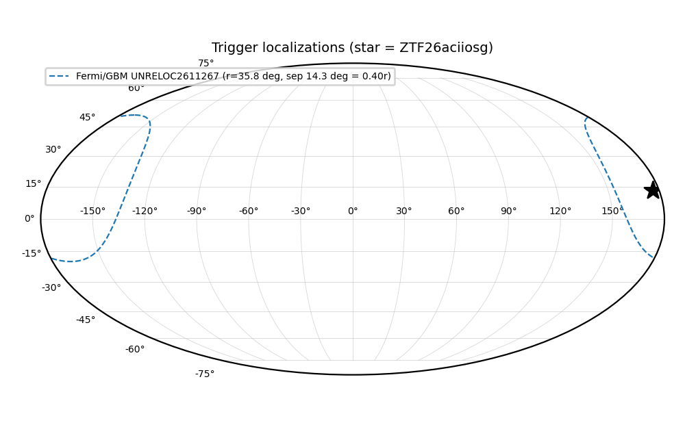
Rise Rate:
r: 0.2 mag/day
Fade Rate:
3. [ZTF] ZTF26acikilo (Afterglow?) (TNS: AT 2026akqh) [Back to Top] [Share] [Trigger Swift] [Fritz Alert] [Fritz Source] [Lasair]RA, Dec: 304.68757, -1.34444 20h18m45.02s, -1d-20m-39.97sGalactic (l, b): 42.02999, -19.96985 ext(g-r) = 0.142Coincident trigger: Fermi/GBM GRB261123387 (r=4.4 deg, sep 6.6 deg = 1.49 r; 0.71 d before first detection)Trigger time(s) marked on the light curve; error circles in the localization panel.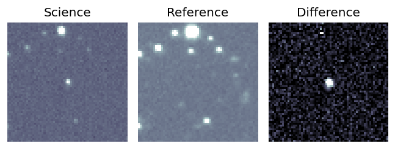

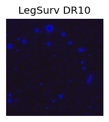
TESS: Sectors 81
PS1: 0 sources in 3 arcsec
LegacySurvey: 0 sources in 3 arcsec
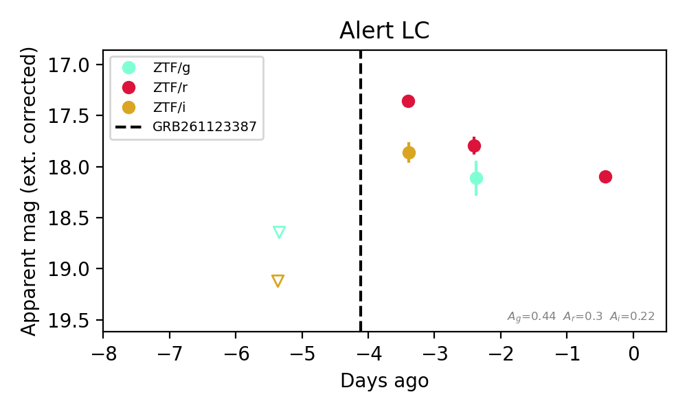

Extinction-corrected gr color:
From alerts: 0.32 +/- 0.19 mag
Extinction-corrected ri color:
From alerts: -0.5 +/- 0.12 mag
Consistent with synchrotron, g-r>0!
Rise Rate:
g: 0.18 mag/day
r: 0.15 mag/day
i: 0.64 mag/day
Fade Rate:
r: 0.24 mag/day
4. [ZTF] ZTF26acimuzg (Afterglow?) (TNS: AT 2026akhr) [Back to Top] [Share] [Trigger Swift] [Fritz Alert] [Fritz Source] [Lasair]RA, Dec: 30.93356, -16.5955 2h 3m44.05s, -16d-35m-43.79sGalactic (l, b): 184.46147, -70.23109 ext(g-r) = 0.034


TESS: Sectors [ 3 30 97 108]
NED photo-z only: WISEA J020344.07-163544.2 (G, 0.6″) z=0.0563 [zflag PUN] — not used for peak abs mag
PS1: 0 sources in 3 arcsec
LegacySurvey: 0 sources in 3 arcsec

Extinction-corrected gr color:
From alerts: -0.04 +/- 0.11 mag
Consistent with synchrotron, g-r>0!
Rise Rate:
g: 0.46 mag/day
r: 1.26 mag/day
Fade Rate:
5. [ZTF] ZTF26acimvgf (Afterglow?) [Back to Top] [Share] [Trigger Swift] [Fritz Alert] [Fritz Source] [Lasair]RA, Dec: 9.49046, 56.96856 0h37m57.71s, 56d58m6.81sGalactic (l, b): 121.08659, -5.8549 ext(g-r) = 0.36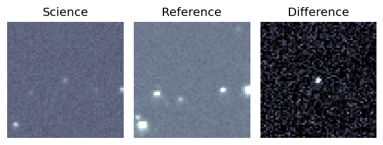
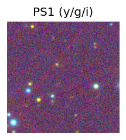

TESS: Sectors [17 18 24 57 58 85]
PS1: 1 source in 3 arcsec Closest: d = 7.45 arcsec photoz=0.57+/-0.08 peak abs mag = -24.97
LegacySurvey: 0 sources in 3 arcsec
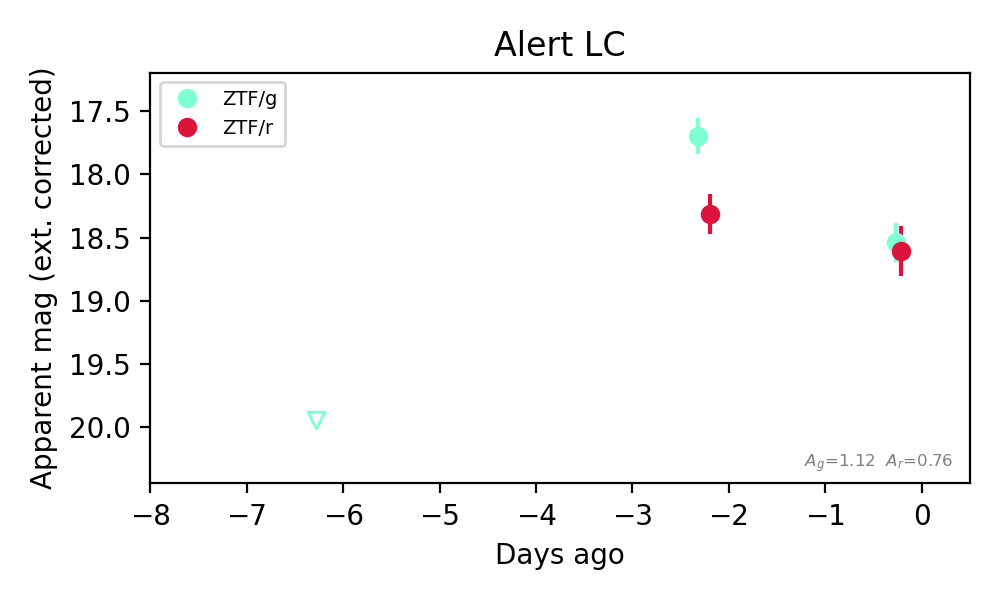
Extinction-corrected gr color:
From alerts: -0.07 +/- 0.25 mag
Consistent with synchrotron, g-r>0!
Rise Rate:
g: 0.57 mag/day
r: 0.07 mag/day
Fade Rate:
g: 0.41 mag/day
6. [ZTF] ZTF26acimzrd (FBOT?) (TNS: AT 2026akqi) [Back to Top] [Share] [Trigger Swift] [Fritz Alert] [Fritz Source] [Lasair]RA, Dec: 44.82411, 7.36554 2h59m17.79s, 7d21m55.94sGalactic (l, b): 169.4597, -43.65835 ext(g-r) = 0.219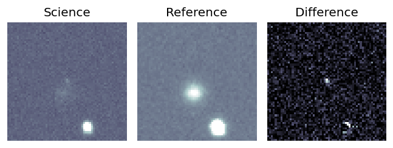


TESS: Sectors [ 4 31 42 43 44 70 71]
PS1: 0 sources in 3 arcsec
LegacySurvey: 1 sources in 3 arcsec Closest: d = 3.45 arcsec, 141.7 deg (east of north) photoz=0.13 (68% bounds 0.07, 0.2), type=EXP peak abs mag (ext. corrected) = -20.86 (68% bounds -19.66, -21.96)

Extinction-corrected gr color:
From alerts: 0.03 +/- 0.16 mag
Extinction-corrected gi color:
From alerts: -0.3 +/- 0.24 mag
Extinction-corrected ri color:
From alerts: -0.34 +/- 0.22 mag
Consistent with synchrotron, g-r>0!
Rise Rate:
g: 0.28 mag/day
r: 0.19 mag/day
i: 0.19 mag/day
Fade Rate:
7. [ZTF] ZTF26acialqe (FBOT?) [Back to Top] [Share] [Trigger Swift] [Fritz Alert] [Fritz Source] [Lasair]RA, Dec: 1.3446, 53.75315 0h 5m22.70s, 53d45m11.33sGalactic (l, b): 116.07779, -8.50451 ext(g-r) = 0.401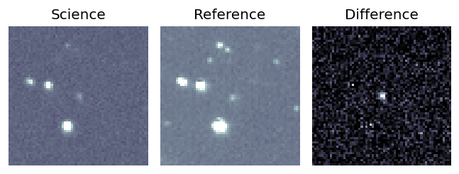
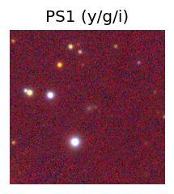
TESS: Sectors [17 24 57 84 85]
PS1: 1 source in 3 arcsec Closest: d = 1.18 arcsec photoz=0.28+/-0.29 peak abs mag = -21.94
LegacySurvey: 0 sources in 3 arcsec
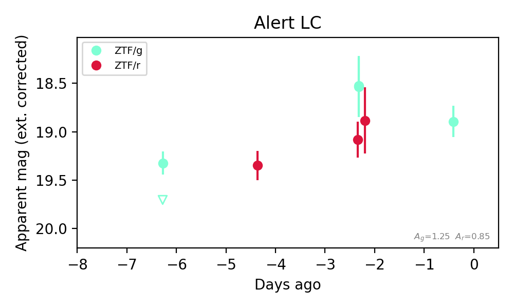
Extinction-corrected gr color:
From alerts: -0.51 +/- 0.27 mag
Rise Rate:
g: 25.88 mag/day
r: 0.05 mag/day
Fade Rate:
8. [ZTF] ZTF26aciawxw (FBOT?) (TNS: AT 2026akru) [Back to Top] [Share] [Trigger Swift] [Fritz Alert] [Fritz Source] [Lasair]RA, Dec: 178.05, 52.66675 11h52m12.00s, 52d40m0.29sGalactic (l, b): 142.32692, 62.17366 ext(g-r) = 0.021
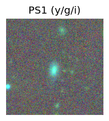
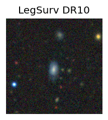
TESS: Sectors [21 22 41 48 75]
SDSS (<15 kpc):Found SDSS phot-z: z=0.08; peak abs mag = -20.00
NED host (10 arcsec):Found SDSS J115212.03+523957.7 (G, 2.6″); NED spec-z: z=0.0705 [zflag SLS]; peak abs mag = -19.74
DESI (10 arcsec):Found DESI spec-z: z=0.07; peak abs mag = -19.74
PS1: 0 sources in 3 arcsec
LegacySurvey: 1 sources in 3 arcsec Closest: d = 2.32 arcsec, 63.3 deg (east of north) photoz=0.08 (68% bounds 0.02, 0.48), type=EXP peak abs mag (ext. corrected) = -20.05 (68% bounds -17.01, -24.37)
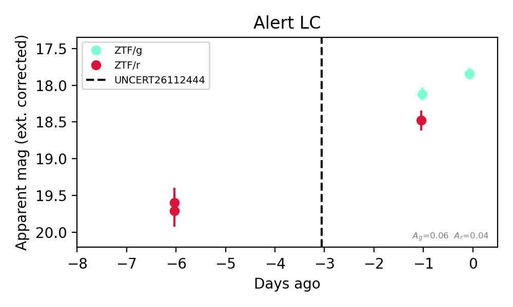
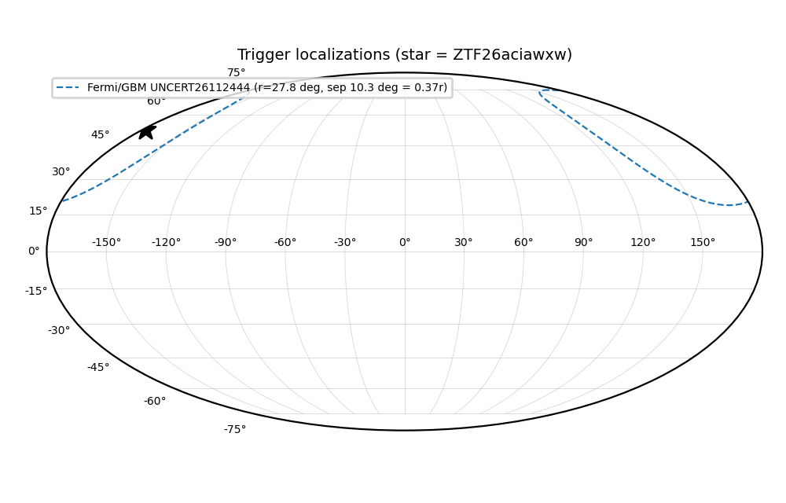
Extinction-corrected gr color:
From alerts: -0.36 +/- 0.16 mag
Rise Rate:
g: 0.28 mag/day
r: 0.25 mag/day
Fade Rate:
9. [ZTF] ZTF26acibtjn (FBOT?) (TNS: AT 2026aksd) [Back to Top] [Share] [Trigger Swift] [Fritz Alert] [Fritz Source] [Lasair]RA, Dec: 144.97229, 27.49378 9h39m53.35s, 27d29m37.61sGalactic (l, b): 200.95289, 47.72469 ext(g-r) = 0.024

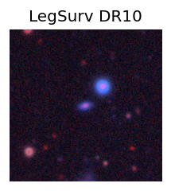
TESS: Sectors [21 45 48]
SDSS (<15 kpc):Found SDSS phot-z: z=0.10; peak abs mag = -20.12
PS1: 0 sources in 3 arcsec
LegacySurvey: 1 sources in 3 arcsec Closest: d = 0.40 arcsec, 143.2 deg (east of north) photoz=0.08 (68% bounds 0.06, 0.11), type=SER peak abs mag (ext. corrected) = -19.57 (68% bounds -18.75, -20.3)

Extinction-corrected gr color:
From alerts: -0.17 +/- 0.19 mag
Extinction-corrected gi color:
From alerts: -0.32 +/- 0.17 mag
Extinction-corrected ri color:
From alerts: -0.15 +/- 0.16 mag
Consistent with synchrotron, g-r>0!
Rise Rate:
g: 0.29 mag/day
r: 0.31 mag/day
i: 0.12 mag/day
Fade Rate:
10. [ZTF] ZTF26acienih (FBOT?) (TNS: AT 2026akvd) [Back to Top] [Share] [Trigger Swift] [Fritz Alert] [Fritz Source] [Lasair]RA, Dec: 81.63781, 22.15724 5h26m33.08s, 22d 9m26.06sGalactic (l, b): 183.42855, -7.26107 WARNING: -1.06 deg from ecliptic plane ext(g-r) = 0.58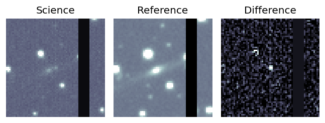
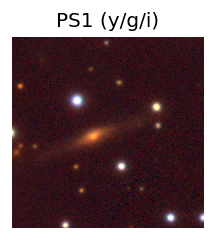
TESS: Sectors [43 44 45 71]
NED photo-z only: WISEA J052633.42+220924.1 (G, 5.2″) z=0.0948 [zflag PUN] — not used for peak abs mag
PS1: 1 source in 3 arcsec Closest: d = 3.18 arcsec photoz=0.07+/-0.01 peak abs mag = -19.66
LegacySurvey: 0 sources in 3 arcsec
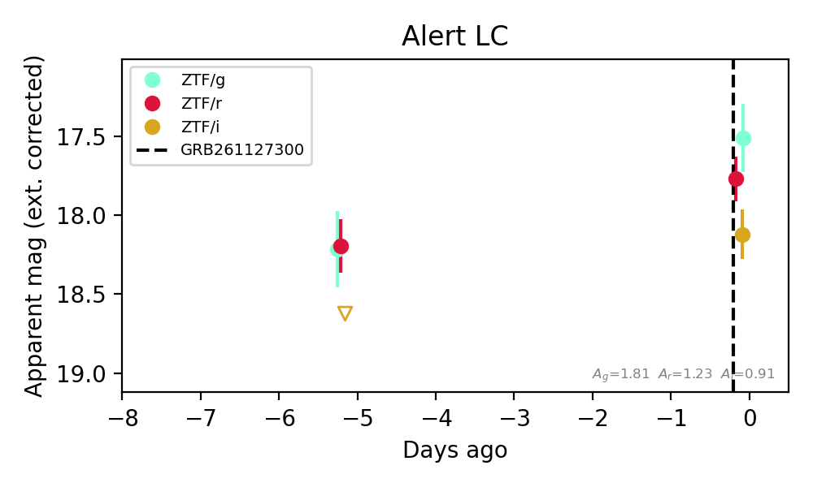
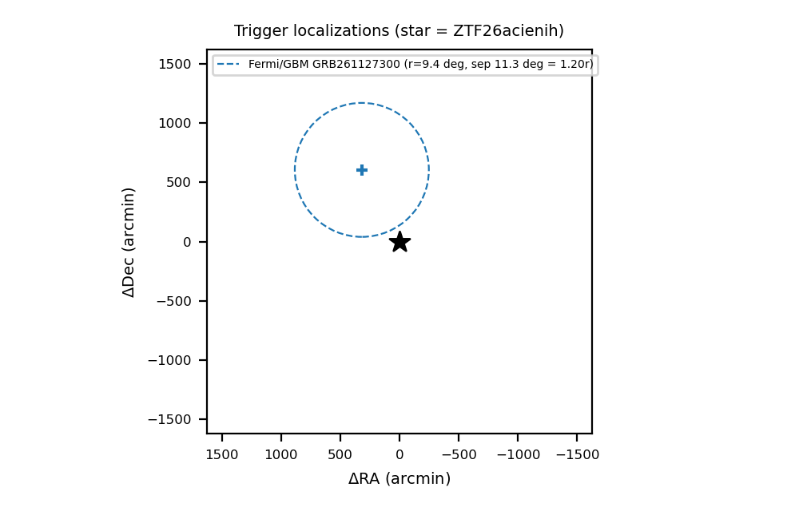
Extinction-corrected gr color:
From alerts: -0.26 +/- 0.26 mag
Extinction-corrected gi color:
From alerts: -0.61 +/- 0.27 mag
Extinction-corrected ri color:
From alerts: -0.35 +/- 0.21 mag
Rise Rate:
g: 0.14 mag/day
r: 0.26 mag/day
i: 0.16 mag/day
Fade Rate:
11. [ZTF] ZTF26aciimxs (Afterglow?) (TNS: AT 2026aksq) [Back to Top] [Share] [Trigger Swift] [Fritz Alert] [Fritz Source] [Lasair]RA, Dec: 119.97367, -1.81588 7h59m53.68s, -1d-48m-57.18sGalactic (l, b): 222.57584, 14.31912 ext(g-r) = 0.035
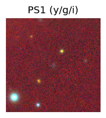
TESS: Sectors [ 7 34 61 88]
PS1: 0 sources in 3 arcsec
LegacySurvey: 0 sources in 3 arcsec

Extinction-corrected gr color:
From alerts: -0.6 +/- 0.28 mag
Extinction-corrected gi color:
From alerts: -0.88 +/- 0.29 mag
Extinction-corrected ri color:
From alerts: 0.51 +/- 0.3 mag
Consistent with synchrotron, g-r>0!
Rise Rate:
g: 0.21 mag/day
r: 0.05 mag/day
i: 0.14 mag/day
Fade Rate:
i: 0.68 mag/day
12. [ZTF] ZTF26acinyqu (Afterglow?) (TNS: AT 2026aksh) [Back to Top] [Share] [Trigger Swift] [Fritz Alert] [Fritz Source] [Lasair]RA, Dec: 75.79896, -16.05171 5h 3m11.75s, -16d-3m-6.16sGalactic (l, b): 216.05752, -31.00947 ext(g-r) = 0.088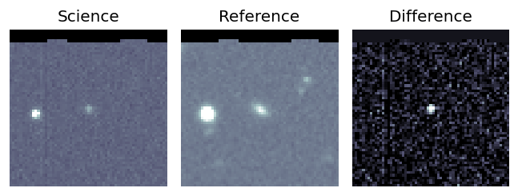
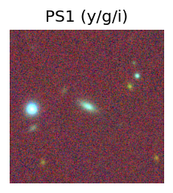
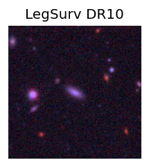
TESS: Sectors [ 5 32 98 107 108 110]
PS1: 0 sources in 3 arcsec
LegacySurvey: 1 sources in 3 arcsec Closest: d = 0.49 arcsec, 199.7 deg (east of north) photoz=0.04 (68% bounds 0.03, 0.06), type=SER peak abs mag (ext. corrected) = -18.38 (68% bounds -17.86, -19.22)
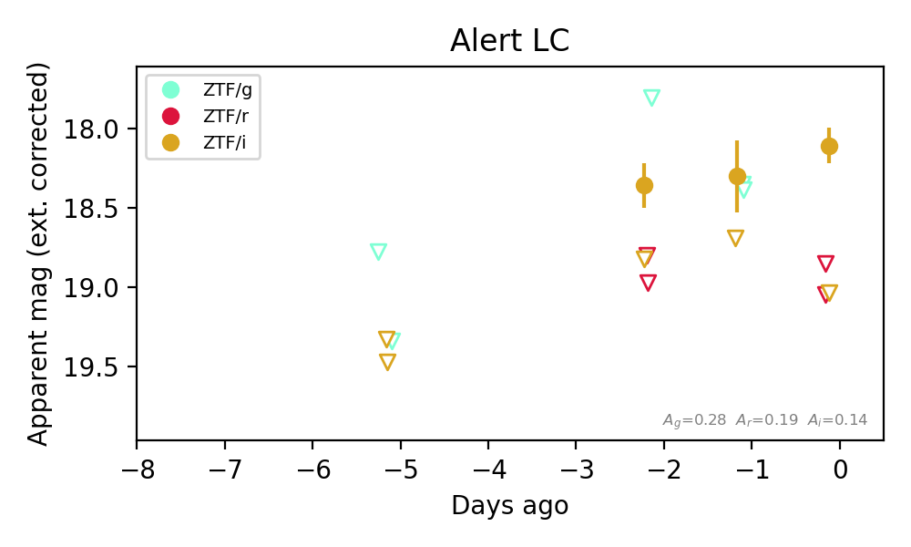
Extinction-corrected gi color:
From alerts: 0.09 +/- 99 mag
Extinction-corrected ri color:
From alerts: 0.94 +/- 99 mag
Rise Rate:
i: 0.55 mag/day
Fade Rate:
i: 0.7 mag/day
13. [ZTF] ZTF26acitojf (FBOT?) [Back to Top] [Share] [Trigger Swift] [Fritz Alert] [Fritz Source] [Lasair]RA, Dec: 290.99492, 10.23039 19h23m58.78s, 10d13m49.39sGalactic (l, b): 45.74521, -2.46203 ext(g-r) = 2.122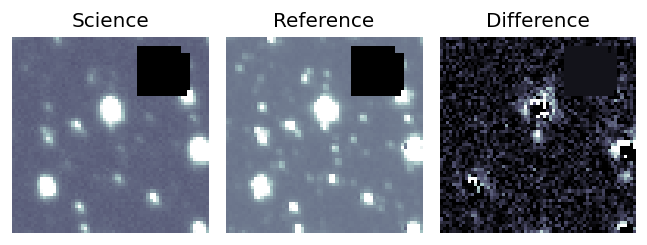
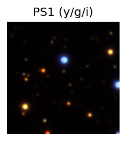
TESS: Sectors [54 81]
PS1: 1 source in 3 arcsec Closest: d = 2.91 arcsec photoz=0.17+/-0.14 peak abs mag = -25.28
LegacySurvey: 0 sources in 3 arcsec
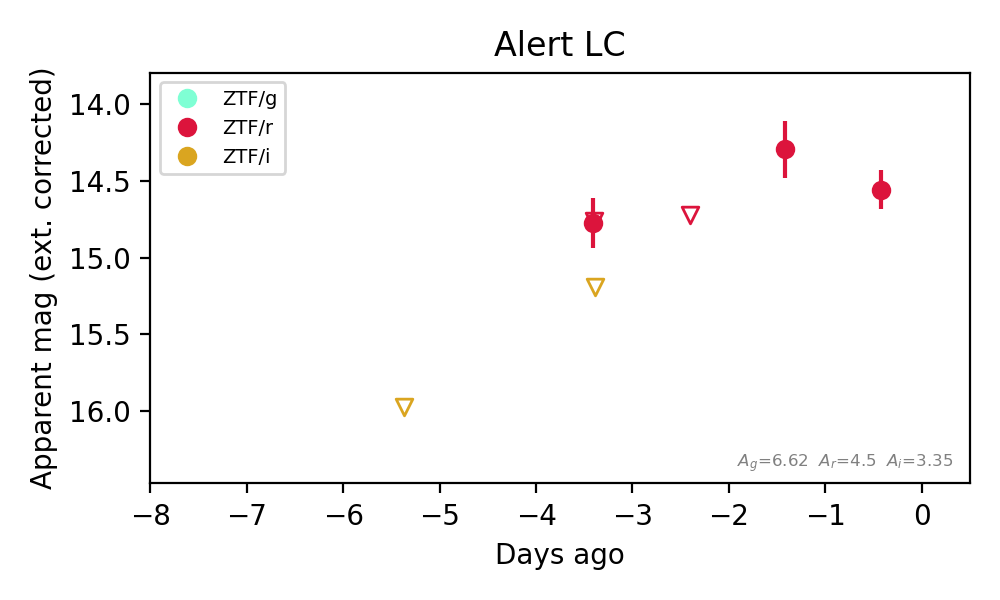
Extinction-corrected ri color:
From alerts: -0.41 +/- 99 mag
Rise Rate:
r: 0.43 mag/day
Fade Rate:
14. [ZTF] ZTF26aciwtle (Afterglow?FBOT?) [Back to Top] [Share] [Trigger Swift] [Fritz Alert] [Fritz Source] [Lasair]RA, Dec: 164.33571, 76.04576 10h57m20.57s, 76d 2m44.73sGalactic (l, b): 131.46902, 39.13092 ext(g-r) = 0.074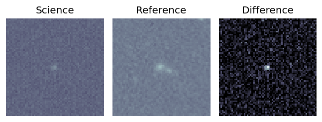
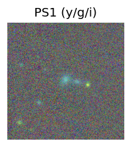

TESS: Sectors [ 14 20 21 40 41 47 53 60 74 119 120]
SDSS (<15 kpc):Found SDSS phot-z: z=0.11; peak abs mag = -19.98
PS1: 0 sources in 3 arcsec
LegacySurvey: 1 sources in 3 arcsec Closest: d = 0.52 arcsec, 40.1 deg (east of north) photoz=0.09 (68% bounds 0.07, 0.11), type=SER peak abs mag (ext. corrected) = -19.46 (68% bounds -18.73, -19.93)

Extinction-corrected gr color:
From alerts: -0.28 +/- 0.35 mag
Consistent with synchrotron, g-r>0!
Rise Rate:
g: 0.57 mag/day
r: 0.05 mag/day
Fade Rate:
Section 3: Already classified as a supernova on TNS (0)